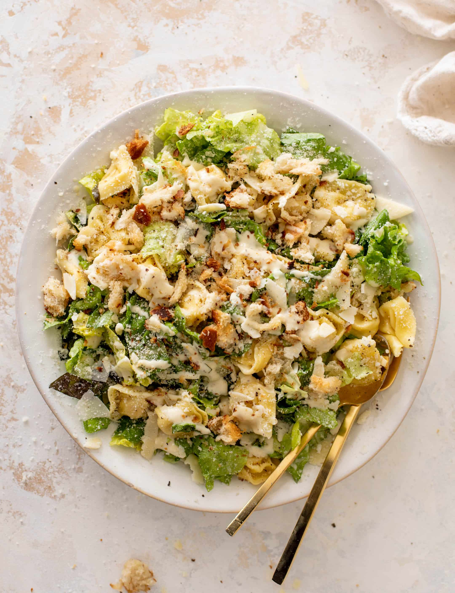

Caesar Salad

Description
A Caesar salad is a classic, crisp, and flavorful dish, known for its rich,
creamy dressing and satisfying combination of textures. Made with fresh romaine lettuce,
crunchy croutons, and grated Parmesan cheese, it's often topped with grilled chicken
for a heartier version. The signature Caesar dressing is a savory blend of ingredients
like olive oil, egg, garlic, lemon juice, Worcestershire sauce, and anchovies, giving
the salad its distinctive umami flavor. This simple yet indulgent salad is perfect
as a side dish or a light main course.
Ingredients
- Romaine lettuce
- Croutons
- Grated Parmesan cheese
- Caesar dressing (made with olive oil, egg yolk, garlic, lemon juice, Worcestershire sauce, anchovies)
- Grilled chicken (optional)
- Black pepper (for seasoning)
Steps
- Wash and dry the romaine lettuce, then chop it into bite-sized pieces.
- Prepare the Caesar dressing by blending or whisking together olive oil, egg yolk, garlic, lemon juice, Worcestershire sauce, and anchovies until smooth.
- Toss the romaine lettuce with the Caesar dressing in a large bowl until well coated.
- Add croutons and grated Parmesan cheese on top of the salad.
- Season with freshly ground black pepper.
- For a more filling salad, add slices of grilled chicken on top.
- Serve immediately.
Back to home